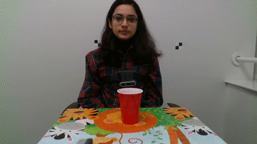

Publications

Reinforcement Learning and Action Space Shaping for a Humanoid Agent in a Highly Dynamic Environment
Jyun-Ting Song, Guilherme Christmann, Jaesik Jeong, Jacky Baltes
Spring's Studies in Computational Intelligence
[Paper]

The CORSMAL benchmark for the prediction of the properties of containers
Xompero, Alessio, et al.
IEEE Access
[Paper]